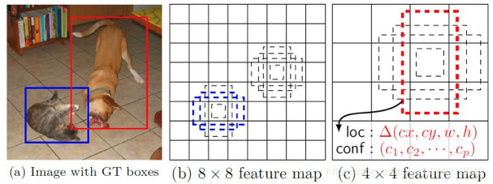

SSD
总流程
在每个不同尺寸的、有prediction的特征图上, 生成相应的DefaultBox(不同的大小和纵横比);
利用GroundTurth完成框匹配, 具体MatchStrategy如下:
先把与GT最重叠的DB配对上;
再把IOU大于阈值(0.5)的DB与相应重叠的GT配对上; 步骤1的目的是能够保证每一个GT都有一个DB对应上, 步骤2的目的是减少负样本的数量、增大正样本的数量和检索模糊的匹配结果
完成配对后, 每一个DB与GT都能做以下计算
假设每一个DB为(dx, dy, dw, dh), 表示为框的xy坐标和宽高 同理GT表示为(gx, gy, gw, gh) 则每个被匹配DB回归的目标为可以转成LOC=((gx-dx)/dw, (gy-dy)/dh, log(gw/dw), log(gh/dh)) 加上对框的类别分类C=(背景, 类别1, ..., 类别N) 每个被配对的框对应学习目标为[LOC, C]

模型在每个有prediction输出的特征图的每一个位置上输出prediction, 学习每个框输出的[LOC, C]
Ref:
https://arxiv.org/abs/1512.02325
https://blog.csdn.net/u010712012/article/details/86555814